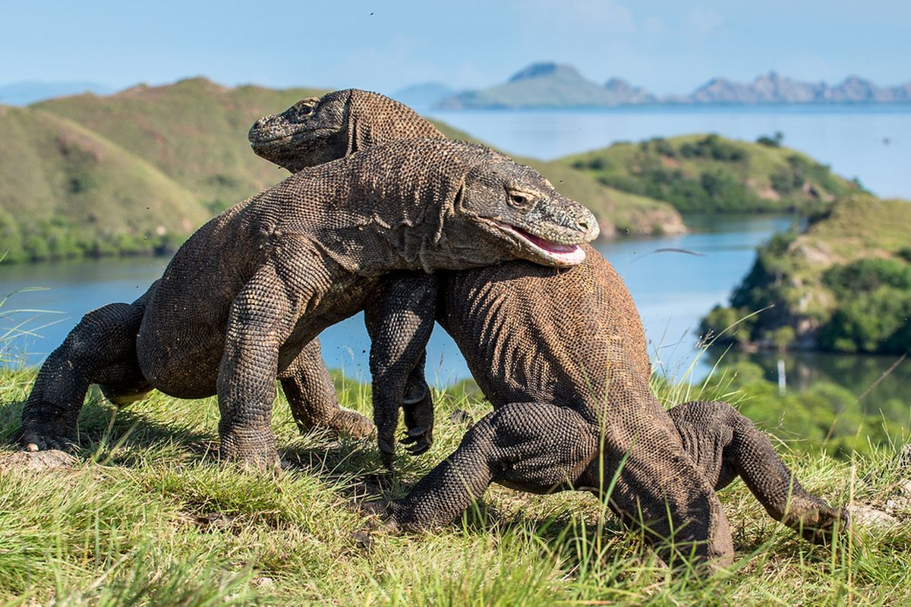
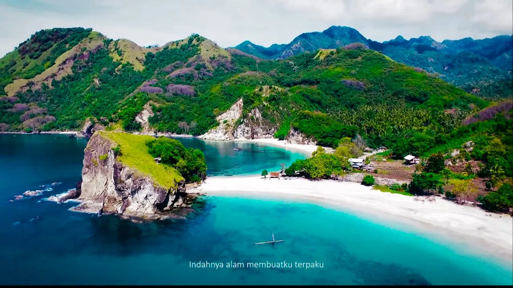

1. Labuan Bajo
Labuan Bajo merupakan salah satu destinasi wisata terkenal di Flores yang memiliki keindahan alam dan laut yang menarik.
Lihat DestinasiJelajahi Keindahan Pulau Flores
Temukan destinasi wisata alam dan budaya yang menarik di Pulau Flores.
Berikut adalah beberapa destinasi wisata yang dapat Anda kunjungi saat melakukan perjalanan ke Flores.
Labuan Bajo merupakan salah satu destinasi wisata terkenal di Flores yang memiliki keindahan alam dan laut yang menarik.
Lihat Destinasi
Taman Nasional Komodo merupakan kawasan wisata yang terkenal dengan keberadaan satwa komodo dan keindahan alamnya.
Lihat Destinasi
Danau Kelimutu merupakan destinasi wisata alam yang terkenal dengan tiga danau yang memiliki warna berbeda.
Lihat Destinasi
Wae Rebo merupakan salah satu desa wisata yang memiliki keunikan budaya dan rumah adat tradisional.
Lihat Destinasi
Pantai Koka merupakan destinasi wisata pantai yang menawarkan pemandangan laut dan alam yang indah.
Lihat DestinasiFlores merupakan salah satu pulau di Nusa Tenggara Timur yang memiliki berbagai macam daya tarik wisata.
Wisatawan dapat menikmati wisata alam, wisata bahari, dan wisata budaya.